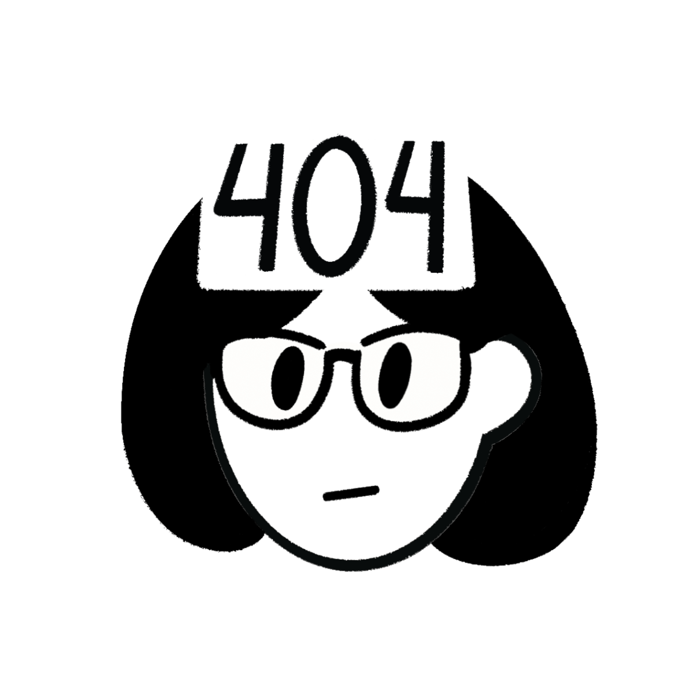
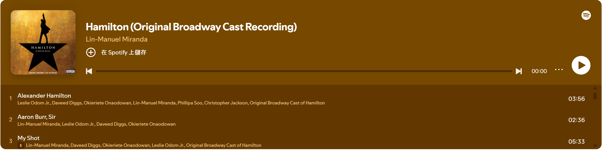

|  |
|
自傳社團活動作品集聯絡資訊 |
|
在角落的一隻炸蝦 |
||
程式設計一直是我從小到大的興趣與專長。因為父母分別具有資工與資管背景，自小耳濡目染，使我在國小時便開始接觸 Scratch，高中則是選擇二類組 (資訊理工) 並進一步學習 Python。在高中時挑戰 APCS 檢定，獲得觀念題 3 分，實作題 3 分(滿分皆為 5 分)，奠定了我在程式設計的自信心與基礎能力。 升上大學後學習了更多程式語言和演算法，並參加大學程式能力檢定(CPE)，成績為 3 題(總共 7 題，排名367，13.4%)。
在生活中，我習慣提前規劃並將必要的事項記錄下來，以避免臨時的狀況影響進度。通常我會在一週前先列出待辦事項，讓自己在行程上兼具彈性與秩序，這樣的規劃方式能減少突發變動帶來的壓力。 當遇到挫折時，我會透過散步、聽音樂等來幫助自己快速轉換心情，讓自己重新獲得做事情的動力，並以更積極的心態持續完成後續任務。 在團隊合作方面，我具備良好的溝通與協作能力。在大學課程與專題中，我經常負責技術相關的工作，展現出高執行力與解決問題的能力。除了能專注完成任務，也能凝聚團隊向心力，因此在畢業專題中更擔任組長，協助團隊達成目標。
畢業於臺北市立景美女中，並透過繁星進入國立暨南國際大學資訊管理學系。 進入資管系後，我選擇往資訊技術與系統開發次領域修習，學習了「計算機組織」、「軟體工程」、「作業系統」等。 為了學習程式設計相關新知識與加強理論基礎，在大一下學期時，選擇輔系資工，陸續修習「程式設計」、「邏輯設計與實驗」、「資料結構與演算法」等課程，這些課程比資管系更為深入，使我在程式、演算法與硬體方面獲益良多。 自大一下學期起，我陸續擔任 Python、C 語言、Java 程式設計課程助教，累積共兩年經驗，並在大三期間兼任課輔小老師，不僅要撰寫教材，還要協助同學解決課程上的問題，培養了耐心、解釋程式碼的能力與教學能力。
大一加入系羽球隊，並持續參與至今。
大三創立系桌球隊，並持續參與至今。
我自國小起便持續參與合唱團，直到高中畢業仍未間斷。2025 年暑假，我受邀回母校景美女中合唱團，參加「2025 台北國際合唱大賽」，並於女聲組及當代音樂組中獲得銀獎。
此外，我也曾擔任暨大 110 級畢業晚會-- 「暨然你誠心誠意的發問了」之表演人員。
| 專案名稱 | 類型 | 簡介 | 傳送門 |
|---|---|---|---|
| SSH - See Server Health | LSA 專案 | 使用 Telegram 控制與監控 Server。 | 點此查看 GitHub |
| BobyGamer - 影像辨識用身體玩遊戲 | LSA 專案 | 使用 Mediapipe 偵測身體，用跳躍、左右移動等控制遊戲角色的動作，遊戲有 Flappy Bird、地鐵跑酷、Ping-Pong。 | 點此查看 GitHub |
| C 語言課輔講義 | HackMD 專案 | 1131 程式設計(上) 課輔。 | 點此查看 |
| Java 課輔講義 | HackMD 專案 | 1132 進階程式設計課輔。 | 點此查看 |
| 圖片精選 | 展示圖片的網頁 | 各種照片、圖片，會持續新增。 | 點此查看頁面 |
| 電子郵件：angel99088@gmail.com | |
| IG： @tzu_ching0629、@a_ching_nikki、@ching._.ebi | |
| Telegeram：@tzu_ching0629 | |
| GitHub：@angel0629 |
Hamilton 是一部由 Lin-Manuel Miranda 創作的音樂劇，講述美國開國元勳亞歷山大·漢密爾頓 (Alexander Hamilton) 的生平故事。這部音樂劇融合了嘻哈、爵士、R&B 和百老匯風格，並以多元文化的演員陣容重新詮釋了歷史人物，展現了美國夢和移民精神。Hamilton 自 2015 年首演以來，獲得了廣泛的讚譽和多項大獎，包括普利策獎和多個托尼獎，成為現代音樂劇的經典之作。
